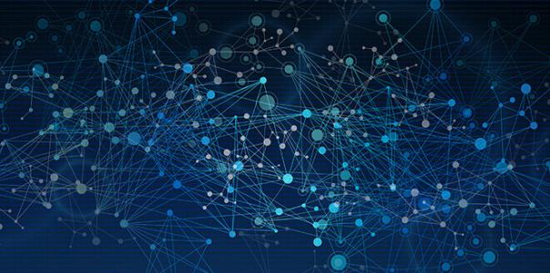
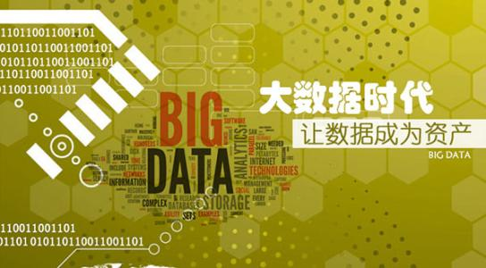

-
海洋大数据可视化平台1.0发布
2017年08月16日
BigDKE-SDVP(BigDKE Scientific Data Visualization Platform),是一自主开发的、第一个基于Web的交互式科学数据 可视化平台。该系统用于多参数序列科学数据的交互式分析与可视化，目前用于物理海洋、地海洋化学等多个学科数据的可视化。 目前用于物理海洋、地海洋等多个学科数据的可视化。
-
大数据学堂
2017年08月16日
大数据就是互联网发展到现今阶段的一种表象或特征而已，没有必要神话它或对它保持敬畏之心，在以云计算为代表的技术创新大幕的衬托下，这些原本很难收集和使用的数据开始容易被利用起来了，通过各行各业的不断创新，大数据会逐步为人类创造更多的价值。
-
2017年7月15日
利用Python通过频谱分析和KNN完成iphone拨号的语音识别[详细]
-
2017年6月15日
人工智能（AI）能帮助市场营销做什么，看了这篇行业白皮书你就知道了[详细]
-
2017年6月22日
大数据Hadoop组件：zookeeper[详细]
-
新闻
-
2017年8月11日
数据新闻就是未来？ 大数据时代新闻报道何去何从[详细]
-
2017年1月17日
什么叫大数据？大数据的作用到底是什么？[详细]

-
科创大数据联合实验室简介
2017年08月16日
"海口科创大数据联合实验室"是面向海口科创大数据行业应用研究而成立的科学技术研发和试验验证环境，具有样本数据 采集、沙箱数据探索、研究成果转化等能力，是开着大数据科学研究、技术创新与应用示范不可或缺的重大基础设施。实验室以合同契约 为保障，发挥产、学、研、用等各方优势，实现高等院校、科研机构、投资机构、企业等战略层面的有机合作，凝聚社会各方力量和资源 ，推动"大数据联合实验室"建设。
-
大数据与企业搜索技术研究
2017年08月16日
-
2017年8月30日
Spark-Streaming的基本原理以及预写日志机制和checkpoint[详细]
-
2017年7月11日
大数据是什么？一文秒读懂大数据[详细]
-
2017年6月11日
大数据的10个常见误解：算法即预言家、大数据必干净[详细]
-
面向环保传感网路的数据流处理方法研究
2017年08月16日
-
2017年6月21日
无线传感网中面向到达时差估计的数据压缩方法研究[详细]
-
2017年6月25日
面向传感网的海洋观测数据集成关键技术研究[详细]
-
2017年7月25日
无线传感网络有效的数据收集问题研究[详细]
